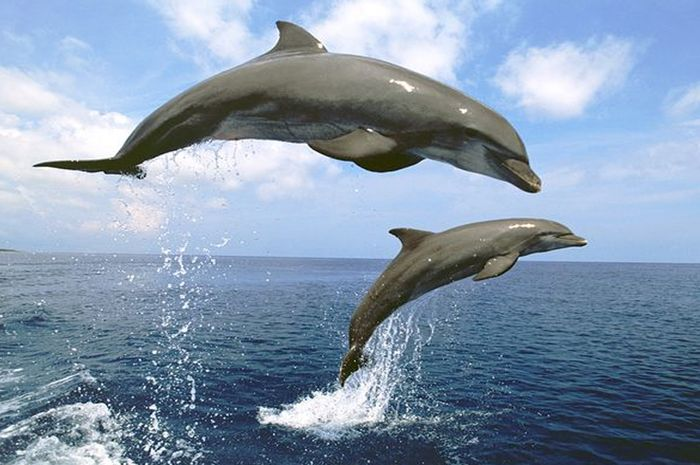

Fakta Menarik tentang Lumba-Lumba

Tahukah kamu fakta-fakta unik ini?
Penampilan fisik lumba-lumba berbeda dari kebanyakan mamalia lainnya.
Lumba-lumba hidup diseluruh dunia.
Lumba-lumba kembar sungguh langka.
lumba-lumba hidup berkelompok.
🔁 Fakta Selanjutnya